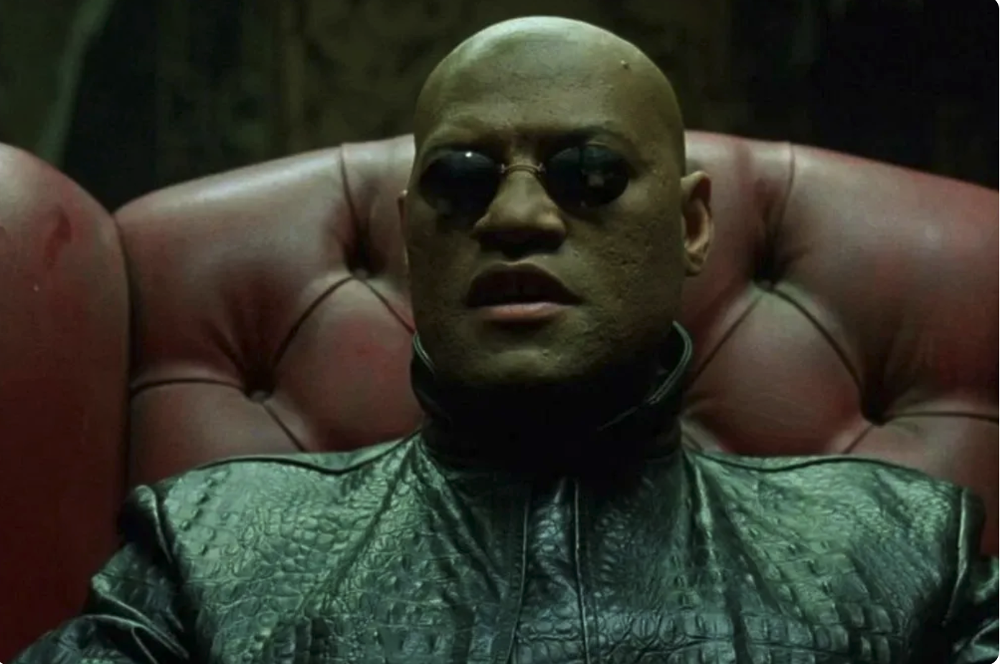
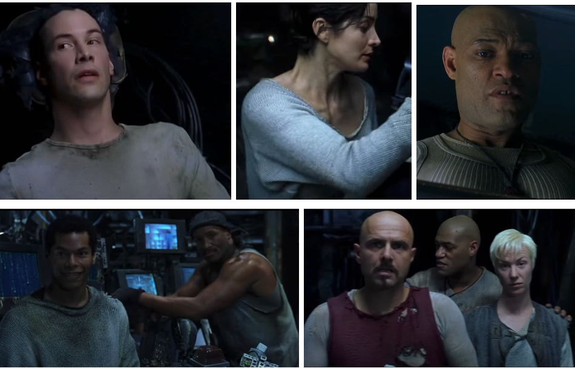

According to readers of the New York Times, the top four movies of 1999 were The Matrix, Fight Club, Office Space, and American Beauty. I love this selection because I think they’re all basically the same movie, starring basically one character:
The movie goes like this:
An office schlub encounters a mythical stranger who teaches him that rules of reality are optional. He decides to stop playing along and immediately becomes cool, popular, and powerful: a middle-aged ubermensch. With his newfound powers he attempts to throw off the shackles of society and achieve his true desires, pitting him against powerful forces that fear his liberation.
Let’s start with Office Space, the first to come out and in many ways the template for the microgenre.
When we meet our protagonist, he’s stuck in traffic. Look at the desperation in his eyes:
We learn about the drudgery of Peter’s life. He hates his job and his boss, Lumbergh. He thinks his girlfriend is cheating on him, and his friends agree. He has a crush on Joana, a local waitress (Jennifer Aniston), but he’s too chicken to ask her out. “Every single day that you see me, that’s on the worst day of my life,” Peter tells a hypnotherapist.

“Is there any way that you could sorta, just zonk me out, so I don’t know that I’m at work, in here?” he asks. The therapist can’t do that, but he does ask Peter to try to relax, to “slip deeper and deeper into a state of complete relaxation. All your cares and concerns are disappearing.. Deeper and deeper, way down, your concern about your job melts away. Way, way down. Now when I count backwards from three, you’ll be in a state of complete relaxation. Your worries, cares and inhibitions will be gone. And you will remain in that state until I snap my fingers.” But our mythical stranger dies suddenly and never snaps his fingers. All of Peter’s worries, cares, and inhibitions are gone.
The next 20 minutes of the movie are sublime. First, Peter sleeps the day away and hangs up on his horrible girlfriend. He rolls in late to work, wearing much cooler outfits, where he plays Tetris, guts a fish on his desk, and generally kicks back.
He asks Joana out and wins her over with his open-hearted honesty. He then talks to two downsizing consultants at his company in one of the most iconic scenes of 1990s cinema.
Just like Joana, they’re completely taken with Peter, calling him a “straight-shooter with upper management written all over him.” Most importantly, his new status with the consultants causes him to either ignore or dominate Lumbergh.
So what will Peter do with his newfound power? At first, it seems like all he’ll do is make more money, do less work, and watch Kung Fu movies with the most beautiful person on earth 2004: sweet! But then he learns that his friends Samir and Michael are about to get laid off, and he hatches a plan to get back at the company. The three of them plant a virus designed to steal small sums from a huge number of routine transactions and thereby enrich themselves.
This is where the movie loses me because I don’t care about Peter’s getting one over on the company. “Initech is an evil corporation,” he tells Joana, but we don’t see a lot of evidence of that. Sure, the way Lumbergh treats Milton is completely unethical, but Milton is perfectly capable of striking back (and does so spectacularly). His friends quickly find other jobs.
No, what’s actually happening is that even though Peter has lost all his worries, cares, and inhibitions, his imagination is still profoundly limited. He breaks things off with Joana when he thinks she dated Lumbergh once upon a time, and the scene where Peter dreams of the two of them together is the most sexually alive in the movie. We see that Peter’s job is his life. His newfound powers as a liberated man have nowhere to go because he can’t imagine other possible selves. He’s obsessed with a dominance contest with Lumbergh, a man who, yes, drives a Porsche, but also has to work weekends and celebrate his birthday with people who despise him.
Peter does eventually move on. At the movie’s end, He’s working construction with his neighbor Lawrence, and if he’s not the same ecstatic person he was when he first achieved enlightenment, he at least seems content. Initech is no longer his entire world, and although he is literally cleaning up its ashes when we last see him, he seems happy with his little life.
***
Contrast this with Fight Club, whose protagonist has, to put it lightly, a more active imagination.
Our hero (‘The narrator’) is beset by insomnia and trying to fill the void with mindless consumerism and support groups for diseases he doesn’t have.
He goes where his boss tells him and translates life and death into bottom line calculations for an unethical car company. Finally he wakes up from a reverie about a plane crash and meets his mythical stranger: Tyler Durden, played by People’s Sexiest Man Alive 2000 as a vision of violent masculinity.
The narrator then loses everything in a house fire and seeks out Tyler, who consoles him: “the things you own end up owning you. But do what you like man.” Tyler then makes a request: “I want you to hit me as hard as you can.” One thing leads to another and soon they’re living together in squalor and hosting a fight club. It’s a complete rejection of The narrator’s previous docile, consumerist life, and it comes with numerous benefits.
It helps our hero turn the volume down on his stupid, sneering boss.
He finds emotional equanimity and (as far as we know) starts being able to sleep better. He stops going to support groups. He and Tyler walk into a bar like they own the place. “You weren’t alive anywhere like you were alive there,” he says. We watch the club bring meaning and camaraderie to its participants’ otherwise empty, unsatisfying lives. The narrator then beats himself up to blackmail his boss. This total rejection of the rules of the game both gets him what he wants — a modest salary without having to work, the Gen X dream — and establishes that he, the injured mess, is in fact socially dominant.
Eventually Tyler starts to direct the club’s misery and rage into random acts of violence, and then not-so-random acts designed to erase the debt record. Finally we learn that Tyler is The narrator’s night-time personality, which causes The narrator to shoot himself, killing Tyler but not himself (??), and then we watch some buildings blow up. The end.
When I rewatched this movie, the main thing that stood out was how right wing its politics are. The anti-capitalist veneer coded it left 25 years ago, but these guys’ general rage, their impulse to destroy, and their harnessing of male lostness for political ends all seem very trump-y. Incels have taken notice. David Fincher despairs of this, saying: “It’s impossible for me to imagine that people don’t understand that Tyler Durden is a negative influence…People who can’t understand that, I don’t know how to respond and I don’t know how to help them.” To which I would say, it’s your movie that made Tyler out to be cool and sexy and socially dominant. It’s your camera that ogles his blood-spattered body. You can’t imagine Tyler trying to storm the capitol, but the men in his orbit? Absolutely. “We have no Great War,” he says. “No Great Depression. Our Great War’s a spiritual war… our Great Depression is our lives.” This movie’s basic premise is that war would have been a good answer to these men’s problems, but absent that, they need to start just blowing stuff up. Pardon me for not finding that amenable.
***
Which brings us naturally to The Matrix.
The Matrix was the first R-rated movie I saw in a theater, and to this day I think it absolutely rules. Way back in the early 2000s, its influence was everywhere: a video game franchisewith bullet time as a central play mechanic and dark fantasy/sci-fi movies with distinct color schemes and elaborately superhuman fight scenes. But what sticks out to me nowadays, as a friend recently said, is how we ever could have thought it was anything besides a trans metaphor.
When we first meet Thomas Anderson, he’s asleep at his desk.

He stays out too late at a club, and the next morning it’s time for his routine workplace humiliation.
Soon after, we meet the mythical stranger, Morpheus,

I’d call this the most famous, recreated, parodied, and memed scene in the past 50 years of movies. But to me, the key difference between this scene and the other mysterious stranger scenes in the microgenre is that our protagonist chooses to be liberated. Peter and The narrator (and Lester Burnham, as we’ll see) all have their life-changing encounter by chance. Peter wakes up and wants to fight a single company. The narrator just wants to feel alive. But the hero of The Matrix has enough agency to choose his fight. His enemy is reality itself, or more specifically the reality of gender. Consider:
After being red-pilled, our hero wakes up desexed in an egg.
He undergoes a quick surgery from a friendly robot doctor.
He then gets rescued by a band of merry pirates who basically all wear the same clothes…

One of whom is named Switch! (Apparently Switch was intended to “be a man in the real world and then a woman in the Matrix.”)
Once he’s with his chosen family — because, again, he made a conscious choice — everyone of course calls the protagonist by his chosen name: Neo. For the rest of the movie, the only people who deadname Neo are agents of The Matrix. During the movie’s climax, when he’s fighting Agent Elrond, Neo heroically refuses to be called Mr. Anderson (emphasis on Mister).
At the film’s end, Neo tells the agents that he’s “going to show these people what you don’t want them to see. I’m going to show them a world…without rules or controls, without borders or boundaries. A world where anything is possible. Where we go from there is a choice I leave to you.”
First, you can’t tell me this isn’t awesome. Second, for a movie where characters spend a lot of time killing people, this is quite the conciliatory message! Neo wants to live in harmony with everyone, his former oppressors included. If this is the trans agenda, sign me up! Neo’s ambition is huge: the betterment of the human condition.
That, in my opinion, is really what makes this movie work: underneath the gun-fu, it has a heart of gold.
***
The same can’t be said, I’m afraid, for American Beauty.
I was surprised to see it on the Times list. Although I loved it in high school, today I think that if you traveled back in time to make a movie that was designed to age badly, you couldn’t do much better than American Beauty. It is, quite simply, an Oscar-winning movie about Kevin Spacey throwing off the shackles of society to pursue his one true goal of seducing a teenager. It’s almost comically on the nose as a glamorization of “Male Horniness is Good Actually,” and exactly the kind of enabling bullshit that facilitated Kevin Spacey’s predatory behavior for decades.
The movie opens on Thora Birch complaining about her dad and asking an unseen interlocutor to kill him. We then meet the dad. His name is Lester Burnham. He’s 42 years old, and in less than a year, he tells us, he’ll be dead. “In a way,” Lester narrates, “I’m dead already.”
We watch him masturbate in the shower. We learn that his wife and daughter “think I’m this gigantic loser. And they’re right. I have lost something. I’m not exactly sure what it is, but I know I didn’t always feel this… sedated. But you know what, it’s never too late to get it back.” OK Lester, I’m with you so far!
Next it’s time for the de rigeur workplace humiliation scene in the microgenre. Brad Dupree, who’s obviously a total yuppie jerk, calls Lester into his office to talk about cost-cutting. He asks Lester to write a job description for management.

Lester balks at this, but enlightenment is around the corner. When he goes to see his daughter cheerlead, he has a mythical encounter with (re: gets a huge hard-on for) her friend and teammate Angela, first imagining her dancing, and then envisioning her covered in roses and smiling, just for Lester because he’s such a special boy.
(Stepping outside the movie for a second, actress Mena Suvari was 19-20 when she filmed these scenes, so it’s a little less pervy than Lester’s diegetic infatuation. But it’s certainly in the same creepy ballpark. Today these scenes remind me uncomfortably of Britney Spears’s 1999 Rolling Stone cover, shot when she was 17.)
After Lester’s totally imagined encounter with Angela, he feels like he’s “just now waking up” from a coma, so he decides to stop being a schlub and become cool. (“Spectacular!” he says.) He buys an awesome car, starts smoking weed, and joins his cool gay neighbors for jogs. “I want to look good naked!” he says. This is now the animating goal of his life, and it’s entirely so he can sleep with Angela; when she later asks him what he wants, he replies: “Are you kidding? I want you. I’ve wanted you since the first moment I saw you. You are the most beautiful thing I have ever seen.” (The word ‘thing’ is apt, from Lester’s point of view.)
For some reason he has to work out naked too.
Society, as embodied by his shrew of a wife Carolyn — wonderfully portrayed by Annette Benning, woefully underwritten by Alan Ball — tells him: “you won’t get away with this!” “That’s. What. You. Think!” Lester responds, in between bench press reps. He then blackmails his company for the same thing The narrator wanted — severance of “one year’s pay with benefits” — and when he doesn’t have enough ammunition to get the job done, he throws in an offer to accuse poor Brad of sexual harassment.
Two things stand out about this scene. The first is that Lester asks Brad if he can prove that Brad didn’t offer to save Lester’s job if Lester let Brad go down on him; in their imaginary tryst, Lester still has dominance. Second, when Brad calls him out for his disgusting behavior, Lester says: “Nope. I’m just an ordinary guy with nothing to lose.” Nothing to lose, except, I don’t know, income for your family? Carolyn and Jane don’t seem to cross his mind at all. Post-enlightenment, Lester is a psychopath. Or maybe he always was.
Once Lester gets fit, Angela comes on to him, and right before they’re about to have sex in the family living room — with his daughter upstairs and his wife soon to come home — he calls it off when she blurts out that she’s a virgin. Then Lester gets shot and killed by his neighbor because he’s a repressed homosexual or something. But if Chris Cooper hadn’t done it, his daughter’s boyfriend, Carolyn, and Jane all seemed keen on getting the job done. Once you become liberated, this movie says, everyone wants to kill you.
It also goes out of its way to make Lester sympathetic. As his journey concludes, he says: “I’m great. I’m great.” In his closing monologue, he tells us that “it’s hard to stay mad when there’s so much beauty in the world.” We’ve watch a few scenes of Lester trying to connect with Jane, and his final thoughts are about her and Carolyn. But the last real conversation he has with Jane, after she calls his behavior with Angela disgusting, ends with: “you better watch yourself Jane, or you’re going to turn into a real bitch just like your mother!” He says this because he is a bad man. He is the film’s villain. The essential problem with American Beauty is that it doesn’t know that.
And given the milieu, that almost makes sense. Something about 1999 made it a very fruitful year to tell stories about middle aged white guys throwing off their middle class shackles. That same milliuex let viewers look past the question of what these guys are freeing themselves for — the throwing off is the point. The hero undergoes what Arthur Chu calls, in a closely related essay, a “Hollywoodized Buddhist” conversion where he learns “that material comfort isn’t everything and that freeing ourselves from attachments to material things like jobs and mortgages is the key to true enlightenment and happiness.”
But the jigsaw piece that won’t fit here is that Lester has not at all given up material things. Right after he quits, he buys a 1970 Pontiac Firebird. “The car I’ve always wanted and now I have it. I rule!” And, as he tells us, he also sees Angela as a thing. What Lester rejects is doing things for others rather than doing things for himself. Supporting the family, or being a good father to his daughter, doesn’t spark joy. Smoking weed and trying to sleep with a teenager does. It’s as simple as that.
***
Putting these movies all together, what do we get?
First, the fortunes of software engineers have changed a lot. Neo and Peter live in crappy apartments and have to be at their desk precisely at 9 and wear a suit. At least in the 2010s, things were pretty different.
More broadly, we see a lot of angst about displacement and automation. Each movie portrays an office as just another factory where the people are the cogs. As one of the Bobs puts it in Office Space, the plan for laid off workers is to “bring in some entry-level graduates, farm some work out to Singapore, that’s the usual deal.” We are, in Tyler’s words, “slaves with white collars,” raised to think we’re special but in fact easily replaceable.
We also have a common thread of betas becoming alphas. Notice how, in the portraits at the beginning of this essay, three of four men are glancing down, avoiding eye contact (The narrator is looking at nothing in particular behind his insomnia.) The narrator, Lester, and Peter all then get one over on their boss/employer. The only exception is Neo, who takes the red pill and then, as far as we know, never thinks about his idiot boss again. (Neo is a true role model.)
But my main takeaway from these movies is that collectively, they’re a rebuttal to the idea that it’s the journey that matters, not the destination. All four of our heroes are having a spiritual awakening from middle-class malaise. But what they do with that liberation, where they’re trying to go, matters a lot. Peter wants to watch movies with Jennifer Aniston: great! The narrator wants to feel alive with some rough and tumble: totally with you. Neo wants to overthrow gender: awesome! And Lester wants to seduce a teenager.
I don’t think that American Beauty saw itself as a cautionary tale about liberation. I think the movie sees itself as a meditation on the beauty of our daily lives. But how we relate to that beauty matters. Lester’s problem is not that he admires the way his daughter’s friend dances, it’s that he wants to possess her. It’s that he’s willing to destroy his existing relationships at the drop of a dime. Sure it’s a kind of liberation, but from things that are real and worth fighting for.
So, to the schlubs: I welcome your liberation, gents. But please spend a minute thinking about what you want to do with it. And if you can, be like Neo: go big.